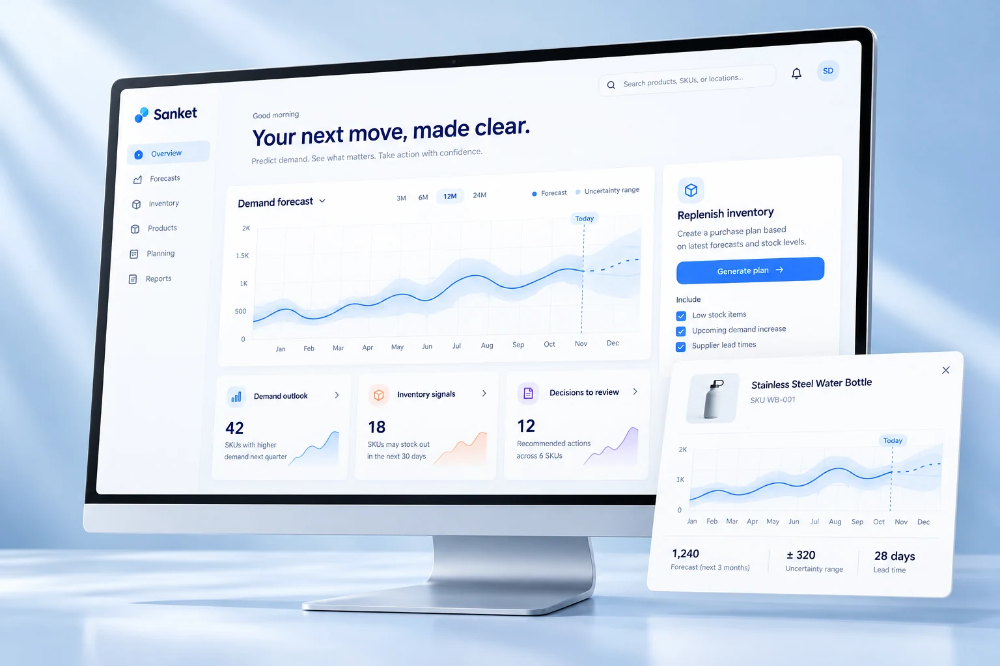
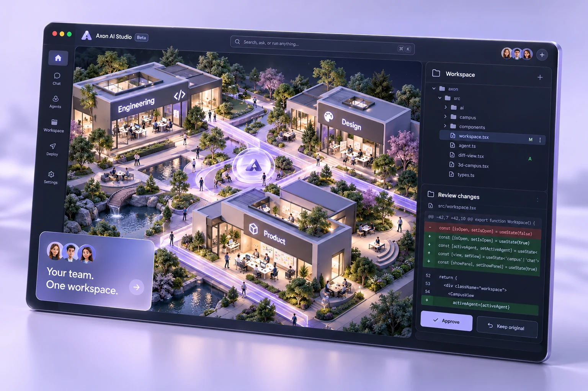
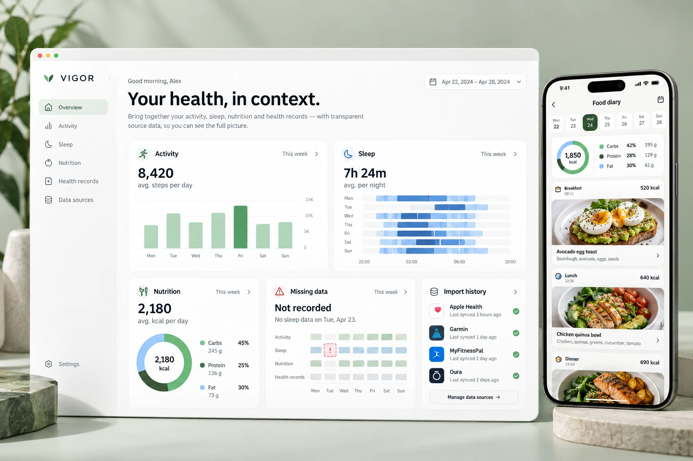
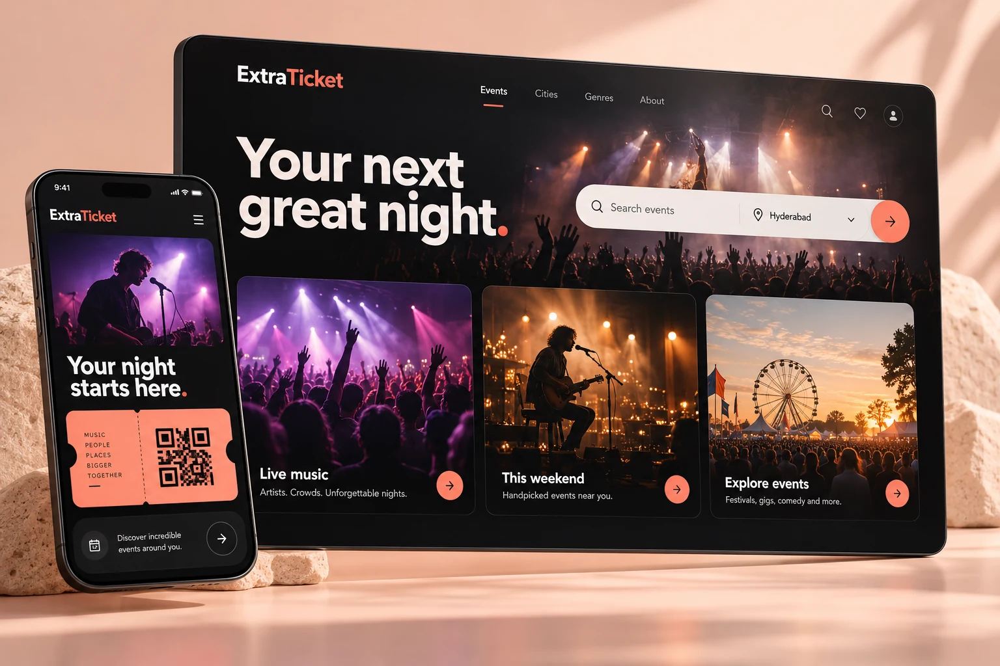
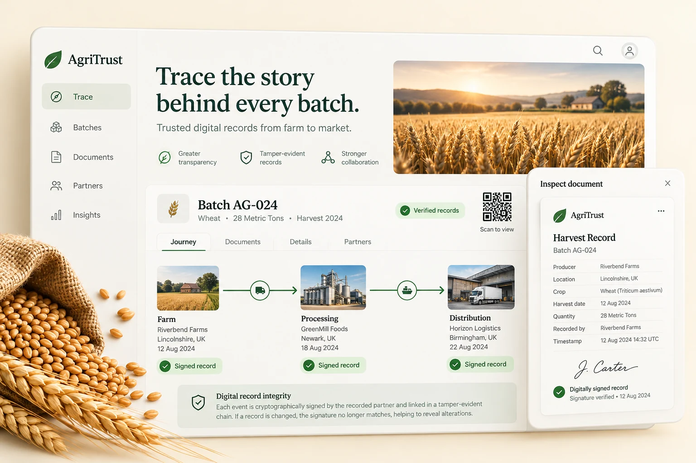
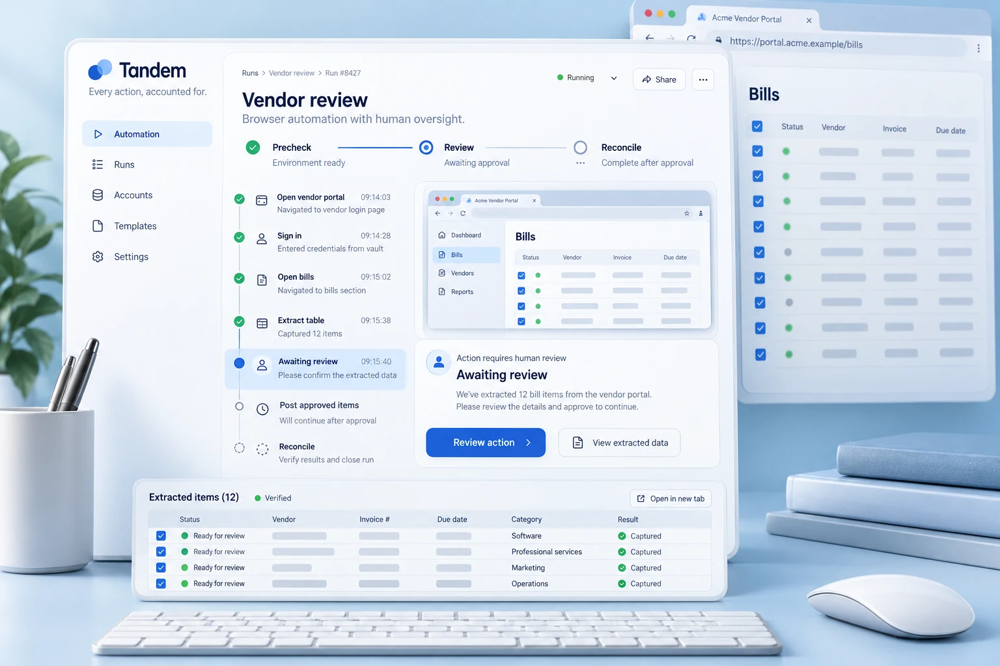
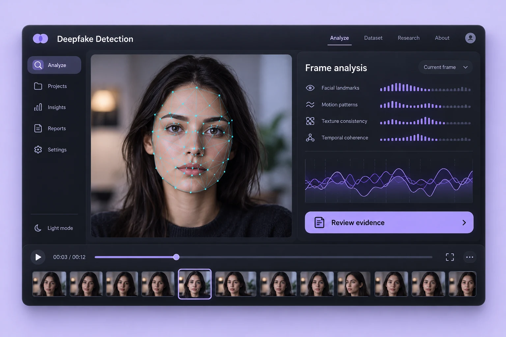
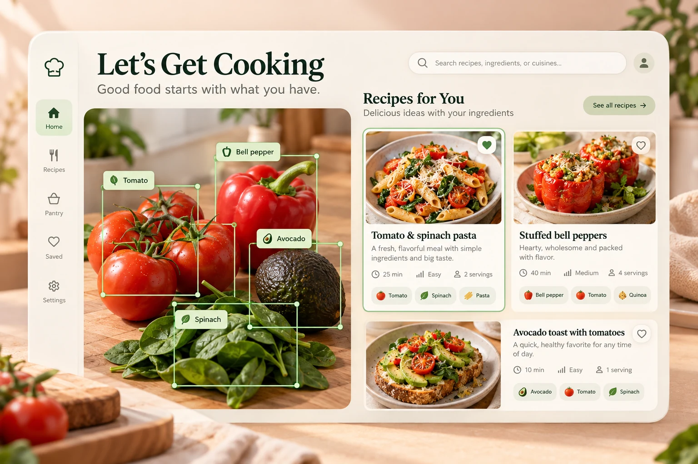

01 / Active developmentRead story

Sanket
Predictive intelligence / BusinessThe business I’m building: demand forecasting and inventory intelligence, designed around the decisions a team has to make.
Hello, I’m Baltej.
I make complex data useful — through clear analysis, machine learning and software that solves real problems.
Co-founder & CEO of Sanket

Python · SQL · Machine learning
Analysis, grounded in engineering.
AI/ML, data analysis and software engineering, backed by industry experience and hands-on projects.
Explore my experience & résumé For founders & collaboratorsAt Sanket, I bring product direction and engineering together to make demand and inventory decisions clearer.
Meet the business I’m buildingLess guesswork.
Better decisions.
Running a business means making decisions before you have all the answers. What will sell? What should you stock? Where is the risk?
I’m building Sanket to turn demand, inventory and operational data into a clearer next move — bringing forecasting, machine learning and product design into one system.
How the pieces connect
Bring demand, inventory and operational data into the same view.
Explore expected demand alongside a visible range of uncertainty.
Connect a forecast to stock decisions and the risks worth reviewing.
Products I’m building, from an AI office to personal data and event discovery. Explore the interface, then the decisions behind it.

The business I’m building: demand forecasting and inventory intelligence, designed around the decisions a team has to make.

A local-first desktop workspace that brings specialist AI roles, a 3D campus and reviewable code changes into one place.

Apple Health imports and a food diary, with reviewable records, visible gaps and consent-based access for AI assistants.

An event-ticket marketplace experience built around discovery, location and a direct path from interest to an event.
A verification prototype for agricultural supply chains. Claims link to signed evidence, batch transformations preserve provenance, and Merkle roots anchor records to an EVM chain. The architecture distinguishes record integrity from proof of physical origin.
TypeScript · Next.js · NestJS · PostgreSQL · Solidity
Explore the repository ↗
A prototype for browser automation across simulated legacy banking interfaces. An append-only ledger, prechecks and reconciliation make ambiguous actions inspectable before an operator proceeds.
Python · FastAPI · Playwright · SQLite
View repository ↗
A ResNeXt CNN extracts frame-level features and an LSTM classifies manipulated video. Evaluated on FaceForensics++, DFDC and Celeb-DF.
Python · PyTorch · ResNeXt · LSTM

Recipes that start with what’s already in your kitchen. A computer vision engine identifies fruits and vegetables from an uploaded image, then builds recipes around those ingredients.
Python · Computer vision

Connecting the dots
I move between business, engineering and design because the best solution rarely lives in just one discipline.
The full professional picture ↗Finding useful patterns and making them understandable. From exploratory analysis and reporting to forecasting and machine learning pipelines.
Python · SQL · PyTorch · XGBoost · Data visualizationTurning an idea into a working system. Interfaces, APIs, databases, agentic workflows and the infrastructure that connects them.
TypeScript · React · Node.js · FastAPI · Electron · MCPGiving complexity a clear shape. Product design, information architecture and thoughtful interfaces that help people get things done.
UI/UX · Figma · Design systems · Interaction designStarting with the problem worth solving. Balancing product direction, operational reality and technical decisions as the co-founder of Sanket.
Product strategy · Systems thinking · EntrepreneurshipIndustry experience in data and machine learning, alongside the product ownership I bring to Sanket.
Building a predictive intelligence business at the intersection of operational data, machine learning and product design.
Building nowIndustry experience in data analysis, with a focus on turning business information into practical insights.
IndustryDeveloping and deploying machine learning pipelines and intelligent applications for real-world client work.
EngineeringTeaching 500+ students data cleaning, visualization, statistical analysis and computer science fundamentals.
Teaching
B.Tech · Computer Science & Engineering
B V Raju
Institute of Technology, Narsapur
Engineer by craft. Co-founder by choice.
I care about how a business works, how a system is built, and how a product feels in someone’s hands.
I’m Baltej, an AI engineer and data analyst based in Hyderabad. My path connects industry work in data analysis and machine learning with hands-on software engineering. As Co-founder & CEO of Sanket, I also work on the business decisions behind a product.
Teaching computer science to more than 500 students shaped how I approach complexity: understand it deeply, explain it clearly, and make it useful. That philosophy follows me into everything I build.
Good work starts with a better question.
I’m always
looking for the next one.
An AI or data role, a product collaboration,
or a conversation about Sanket. Let’s connect.